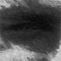
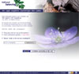
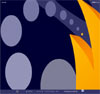
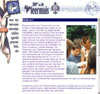
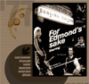

| Archived copy | ||
.FREDERIK [HOME] |
||
 |
I invite you to browse freely through my little digital archive. |
|
| .PORTFOLIO | ||
 |
http://www.natuurbeleving.be Comprehensive database of all European and North-African birds and mammals. Some 500 species with image, text and sound. |
|
 |
http://www.joeweb.be [FlashMX engine] This 100% flashed site was created for Joe, a merchant in gadgets, lighters, gifts, prints for T-shirts etc ... |
|
| http://www.back-up.be Back-up is specialised in IT for lawyers. Unfortunately the company was discontinued. |
||
 |
http://www.fos.be/vleermuis I created this site in 1999 for some local scouts in Dikkelvenne (Ghent). They are called 200e FOS De Vleermuis. Some interesting stuff here! |
|
| http://users.pandora.be/artifex/flashold This was my first flash site. Now it is but a subtle mix of outdated info and classified broken links. I would do something about this situation, but I lost my source-code. Fool of a Took! |
||
 |
http://users.pandora.be/edmonds_sake Online and extended version of a flyer for a special birthday party of four (more or less) young people in my neighbourhood. Password: 1977 |
|
| .[EXPERI]MENTAL | ||
|
[flash] 3Dexperiment - [164Kb] [flash] magnetism - [6Kb] [flash] landscaper - [5Kb] [flash] stardust - [2Kb] [bryce/terragen] 3Drenderings [javascript] rain or snow [quicktime] 360° panorama - [4MB(!)] |
||
| .STUFF | ||
| [sittelle] coverdesigns for birdguides [monty python] grail meaning brian [weather] semmerzake and ghent [jrr tolkien] namárië poem [batmail] netiquette (dutch) [updated] |
||
| .PHOTOGRAPHY | ||
|
[07.05.2002] merelbeke cvn [08.05.2002] zwarte beek [25.05.2002] verkenningsweekend scouts [16.05.2002] panoramas zingem [02.06.2002] viroin [16.06.2002] reservaat de putten [01.07.2002] zomerkamp vleermuis [07.07.2002] bodemonderzoek cvn [15.07.2002] provence panoramas |
||
| .PERSONAL | ||
[who] frederik vandaele
curriculum vitae |
||
| .CONTACT | ||
//contact me for further information about pricing and possibilities for your sites and projects. [mailto:] use this online mailform to contact me (I'm a little paranoid to give away my email to the spambots out there...) |
||
| Copyright © 2002 Frederik Vandaele Site online since: June, 5 2002 |
||